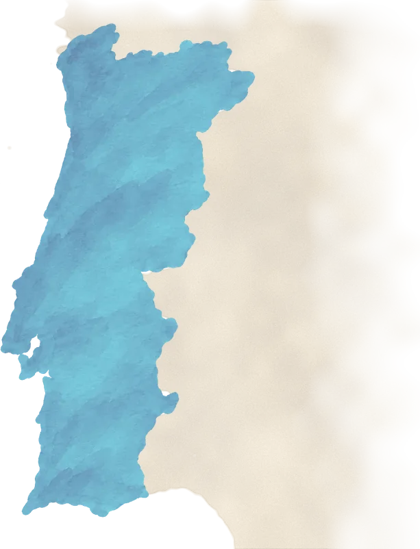
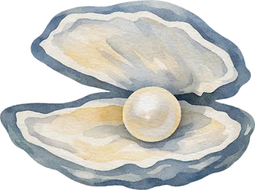

Let us help you plan your
Travel
- Dates
- 1st, 2nd & 3rd of October 2027Friday to Sunday
- Wedding venue
- Hotel Rural Quinta do MarcoSítio do Marco, 632A
Santa Catarina da Fonte do Bispo 8800-164
Tavira – Algarve, Portugal - Closest airport
- FAO – Faro30 min by car
If you’re traveling from Czech Republic we recommend to fly out from two airports: Prague or Nuremberg.
P.S. The flights are often cheaper from Germany.


From the airport to Tavira…
transfer
If you arrive on the 1st of October, we will take care of your transfer. The same applies if you fly back on Sunday, the 3rd – we will take you back to the airport.
However, if you arrive earlier or leave later than the mentioned dates, we ask that you plan your transfer. The best option would be renting/sharing a car or taking a taxi.

A few little things
good to know
- Set your watchPortugal runs one hour behind Prague – a free extra hour of sleep on your first morning.
- Bring a few eurosCards work almost everywhere, but a couple of coins come in handy for a coffee and a pastel de nata.
- Stay connectedYour phone works just like at home – no roaming fees in the EU, so send us all the sunset photos.
- Pack your IDFrom the EU? Your ID card is all you need. Coming from further away – don’t forget your passport.
- Say obrigadoMost people here speak English, but a smiling obrigado (or obrigada) always wins hearts.
- Order a beer like a localA beer here is um imperial – just 0.2 l, so it’s always ice cold. Used to a proper half-litre? Ask for uma caneca.
- If you’re drivingUnlike Czechia, Portugal allows a little alcohol behind the wheel (0.5 ‰) – but that’s only an imperial or two. Better still: pick a driver and let them be the hero.
- Just in case112 is the emergency number, same as at home. We hope you’ll never need it!